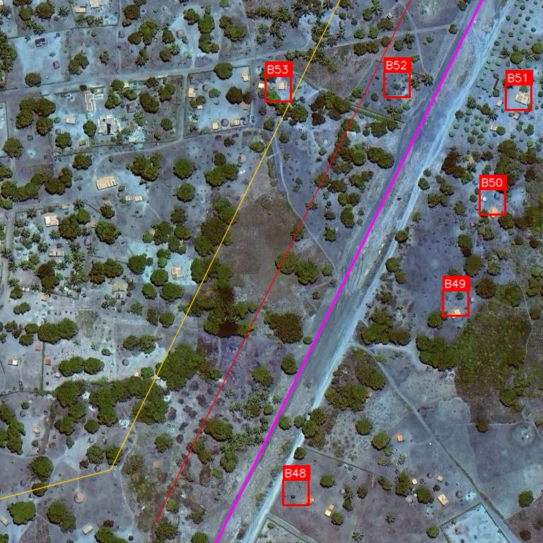
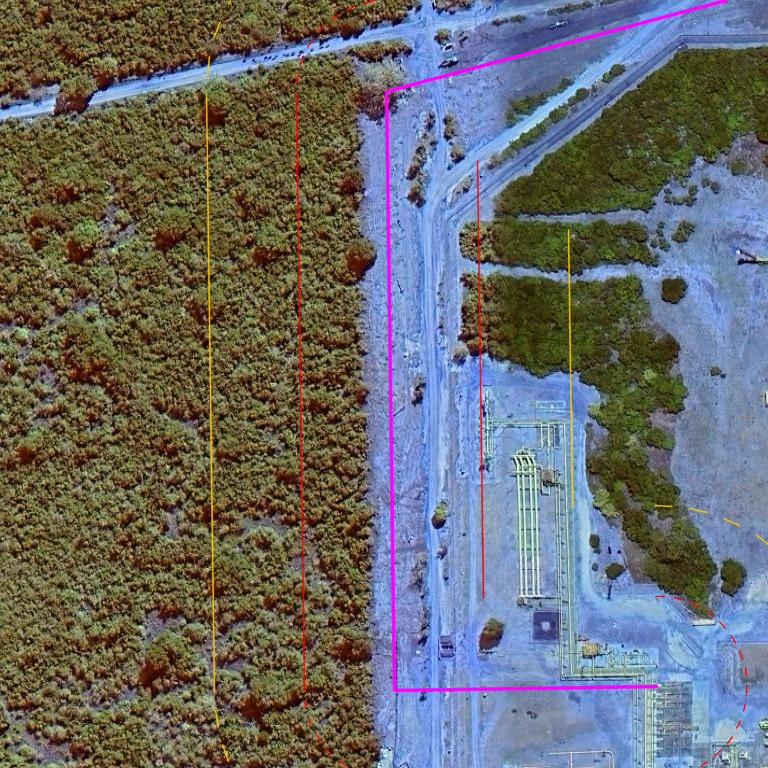
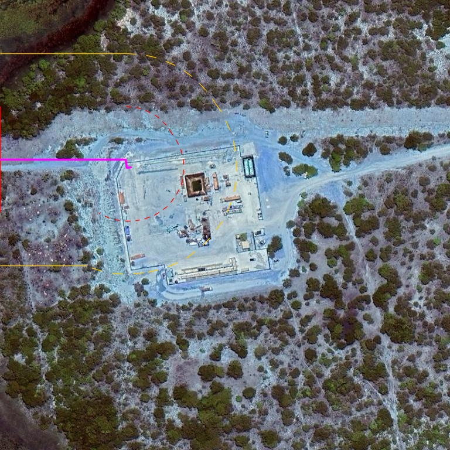
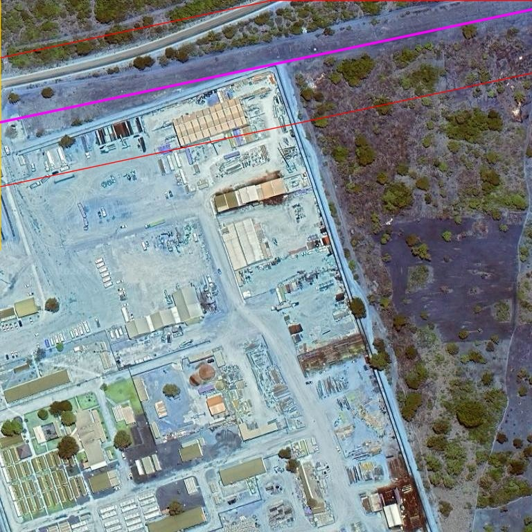
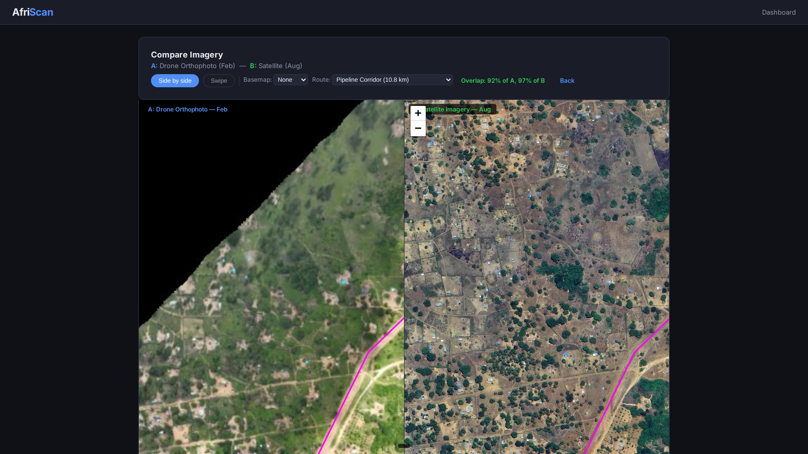

AI-powered pipeline corridor scanning and encroachment detection. Draw a route, click scan, get a professional risk report with every building identified — in minutes, not weeks.
Real results from AfriScan — AI detection on satellite and drone imagery across Mozambique.

6 buildings identified along a pipeline corridor with buffer zone overlays. Each structure labelled with a unique ID, GPS coordinates, and distance to pipeline — ready for the risk report.

Industrial facility flagged within the pipeline buffer zone. AfriScan detects structures of all sizes — from mud huts to processing plants — and classifies risk by proximity to the corridor.

Fenced compound identified adjacent to the pipeline route in dense Mozambique bush. Corridor buffer zones (50m red, 100m orange) pinpoint exactly how close infrastructure sits to the pipeline.

An entire pipeline corridor scanned in minutes. Every building and facility within the buffer zone is identified, measured, and included in the professional risk report.

Side-by-side view of a pipeline corridor — drone orthophoto (left) and high-resolution satellite (right) with the route overlaid in magenta. Spot new buildings, cleared land, and encroachment between surveys at a glance.
Across Africa, communities encroach on pipeline corridors, mining concessions, powerline routes, and telecom sites. By the time you find out, it's a legal dispute, a safety risk, or a multi-million dollar relocation.
New buildings, settlements, and farming creep into your corridor or concession. Without continuous monitoring, encroachment goes undetected until it's too late to act.
Undetected land use changes lead to compensation claims, legal battles, and project delays. Early detection saves millions in relocation and litigation costs.
People living or farming near pipelines, powerlines, and mine sites face real danger. Regulators hold you accountable for what happens in your corridor.
Continuous land use monitoring powered by live satellite imagery, drone surveys, and AI — so you see encroachment as it happens, not months later.
Draw a route on the map, upload a KML/GeoJSON/GPX/Shapefile, or pick from your saved routes. Set your buffer zones, click scan, and AfriScan fetches satellite imagery, runs AI detection, and delivers a complete encroachment report — hands-off, in minutes.
Five detection engines work together: YOLOv8 deep learning, RAMP segmentation (trained on African buildings), HOT fAIr humanitarian mapping, Google Open Buildings, and OpenStreetMap footprints. Combined ensemble mode deduplicates overlapping detections and catches mud huts, zinc-roof compounds, and informal structures that single-model tools miss. Optional SAM refinement converts boxes into precise footprint polygons.
Define any number of buffer distances (50m, 100m, 200m) around your route, or switch to polygon mode for concessions and exclusion zones. AfriScan automatically classifies every structure by buffer, divides your corridor into 500m risk segments, and ranks each one high / medium / low by building density.
Compare any two imagery datasets — drone vs satellite, wet vs dry season, this month vs last year — with side-by-side or swipe viewers. AI diff mode highlights new, removed, and changed structures automatically. Track encroachment growth over time with hard evidence.
Human-in-the-loop tools for ground-truth confirmation: a click-to-mark interface for inspectors, and a gamified "Spotter" challenge with leaderboards for crowdsourced building marking. Verified marks merge back into your corridor results and feed directly into custom model training.
Fine-tune YOLOv8 on your own labelled imagery to catch the exact structures you care about in your terrain. Auto-chip orthomosaics into training tiles, review and confirm labels in-browser, and export a ready-to-train YOLO dataset. Train locally or ship to Colab/RunPod GPUs, then re-import your custom model.
Persistent dataset management for every image you work with — upload drone GeoTIFFs or fetch satellite tiles from Google, Esri, or Bing at zoom 16–20 (0.15–2.4m/pixel). Every dataset stored with its bounds, CRS, and capture date, ready for scan, compare, and report.
Upload raw drone photos and AfriScan processes them into georeferenced orthomosaics directly in the dashboard via WebODM, then feeds them straight into detection. For high-risk areas satellite flags, deploy Afridrone teams for centimetre-resolution verification.
PDF encroachment reports with executive summary, risk ratings, per-segment tables, and GPS-tagged photo crops of every structure. Per-location House Reports pull all available imagery for a single coordinate. GIS-ready exports: GeoPackage, GeoJSON, Shapefile, and KMZ for Google Earth — every detection with confidence, buffer zone, and distance-to-route.
Prefetch satellite tiles for offline field use, watch live progress of every scan via real-time streaming, and resume jobs after restarts from persistent job history. The full dashboard runs on any browser — desktop, tablet, or phone — so routes, scans, and verification happen wherever the work is.
Land encroachment threatens every major infrastructure sector in Africa. AfriScan provides continuous monitoring tailored to each.
Monitor pipeline corridors and right-of-way for new settlements, farming encroachment, and unauthorised activity. Protect operational and planned routes with live change detection.
Track community encroachment on concession boundaries, monitor artisanal mining activity, and detect settlement expansion near tailings dams and haul roads.
Detect structures and farming under transmission lines, monitor vegetation encroachment on powerline corridors, and flag buildings in exclusion zones.
Monitor cell tower sites and fibre routes for land use changes. Track settlement growth around infrastructure for coverage planning and site security.
Draw your pipeline route directly on the satellite map, upload a KML/GeoJSON file, or select from existing routes. Set your buffer zones (50m, 100m) and click scan.
AfriScan automatically fetches high-resolution satellite imagery along your route, runs multiple AI detection models, identifies every building and homestead within your buffer zones, and classifies each pipeline segment by risk level.
Explore results on an interactive map with colour-coded risk segments, toggleable building layers, and satellite imagery. Click any detection to see its distance to the pipeline, GPS coordinates, and satellite photo.
Download a professional PDF report with executive summary, risk analysis, and building photos. Export to Google Earth (KMZ) or GIS formats. Compare with previous scans to track changes over time.
You don't need your own drones, satellites, or GIS team. We acquire all the imagery and deliver the intelligence — end to end.
Continuous access to Airbus Defence & Space satellite imagery — Pléiades Neo at 30cm resolution and SPOT at 1.5m. We task satellites to cover your corridors and concessions on a schedule that suits your monitoring needs.
Professional drone survey teams deployed through our partnership with Afridrone. Centimetre-resolution imagery for detailed site verification and close-range inspection.
Satellite for continuous watching. Drones for ground truth. AI for instant analysis. One provider — complete coverage.
Generic detection models trained on European and North American imagery fail on African landscapes. AfriScan is trained on real African structures — thatched roofs, mud-brick compounds, informal markets, zinc shelters — delivering accuracy where it matters most.
Pipeline corridor surveys across Cabo Delgado, Inhambane, and Gaza provinces.
Models adaptable to rural settlement patterns across East, West, and Southern Africa.
Designed for bush, savanna, coastal, and semi-arid environments common across the continent.
Simple, predictable monthly pricing tied to the size of what you need to watch. No per-seat fees, no setup charges, no platform lock-in.
For first-line visibility over stable corridors.
For corridors with active encroachment risk.
For high-value assets, compliance-critical sites, or active disputes.
For operators with multiple assets, sovereign data needs, or tender frameworks.
Not ready for a subscription? We also deliver on a project basis.
A single comprehensive scan of your pipeline, concession, or right-of-way. Full AI detection, manual QA, risk segmentation, and PDF report. Priced per km or km² of the surveyed footprint.
Rapid response for disputes, accidents, or community incidents. Mobilise Afridrone teams for on-site drone survey, combine with archive satellite imagery, deliver an evidence pack for legal or regulatory use.
Need to detect specific structures unique to your operations — a particular facility type, crop, or land use pattern? We collect training data, fine-tune a custom model, and deliver it ready to run in the platform.
We work with oil & gas majors, mining houses, utilities, and government agencies. We know how your procurement teams operate — and we're built to respond.
We respond to formal tenders, RFPs, and RFQs with structured proposals aligned to your evaluation criteria. Standard response time is 5 business days for qualified opportunities.
Complete documentation pack for procurement and supplier onboarding, including:
Procurement team has questions? Send us your supplier onboarding form and we'll return it completed.
Standard onboarding runs in four stages, typically completed within two weeks of contract signature.
Kick-off call to confirm routes and areas, review boundary files, agree monitoring cadence, buffer distances, alert thresholds, and report format. Outputs a signed scope schedule that locks commercial terms.
We deliver a full baseline scan of every asset in scope. If your tier includes a custom model, we collect training data during this stage and fine-tune against your specific terrain. You receive an initial report covering all current encroachment.
Your team gets live dashboard access with user accounts, roles, and (for Enterprise) branded domain. We walk your technical team through the workflow, exports, and API if applicable.
Monitoring runs on schedule. You receive reports at your chosen cadence, plus alerts for material new detections between reports. Drone sweeps are scheduled and delivered per your tier. Quarterly review calls keep scope, risk, and value aligned.
Get in touch to discuss your monitoring requirements. We'll show you how AfriScan can protect your infrastructure with live satellite and drone intelligence.